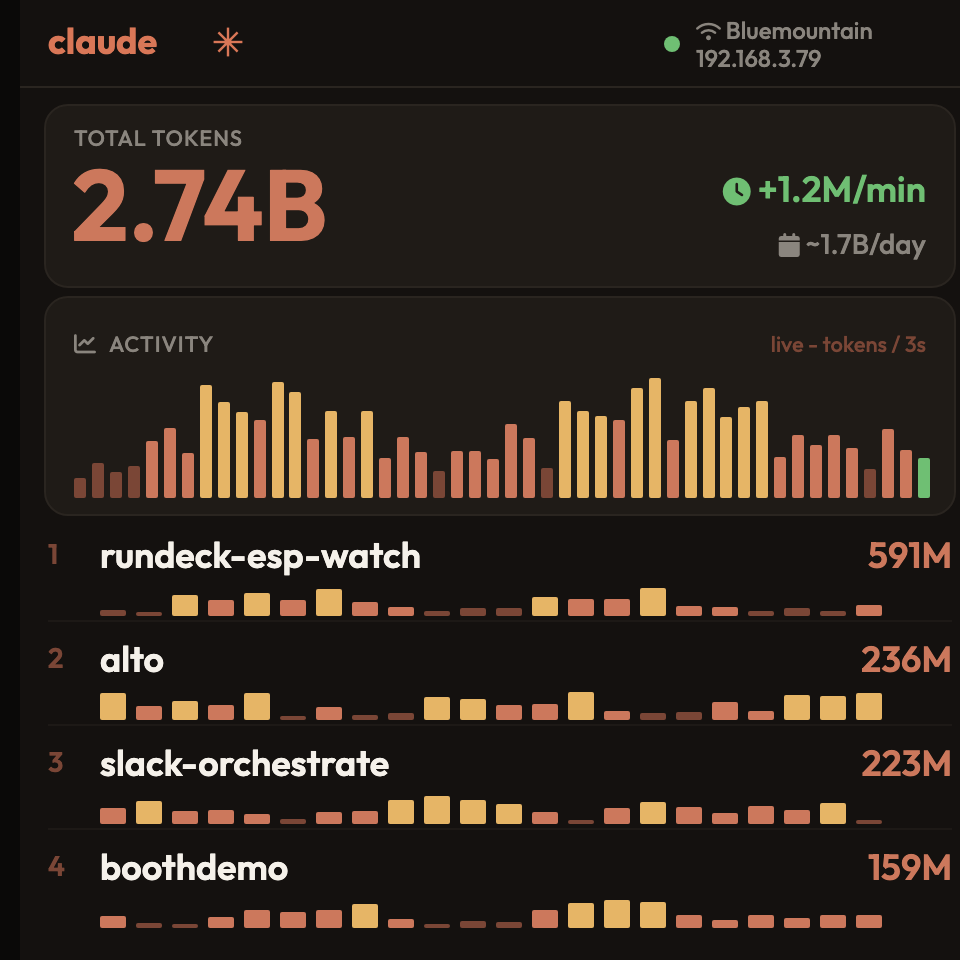

Wireless Claude Code token monitor — Sunton ESP32-4848S040C

Plug the device into this computer with a USB-C cable.
Click Install below and pick the serial port (use Chrome or Edge).
After flashing, join WiFi claudemon-XXXX (password claudemon).
The setup page opens — choose your network and enter its password.
The device reboots and the dashboard appears at http://claudemon.local.
Your browser can't flash over USB — use Chrome or Edge on desktop.Serial access was blocked — reload and allow it.
Then feed it your usage from your computer: see the
desktop tailer.
Prefer the command line? Grab claudemon-full.bin from
Releases and flash at 0x0 with esptool.